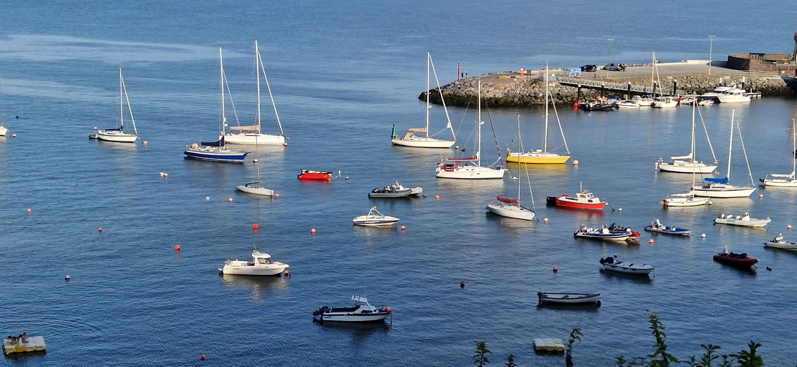
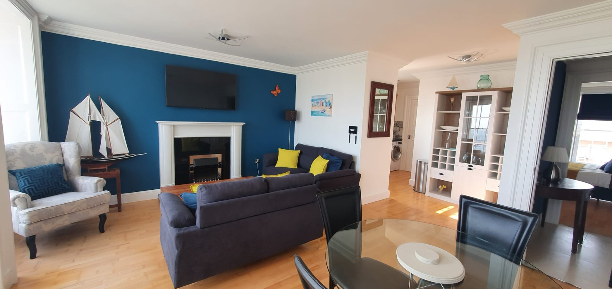
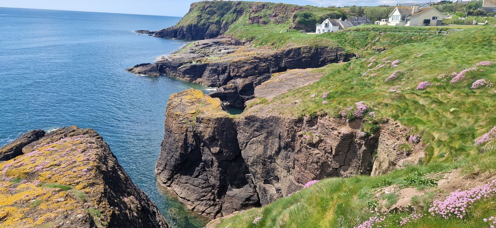
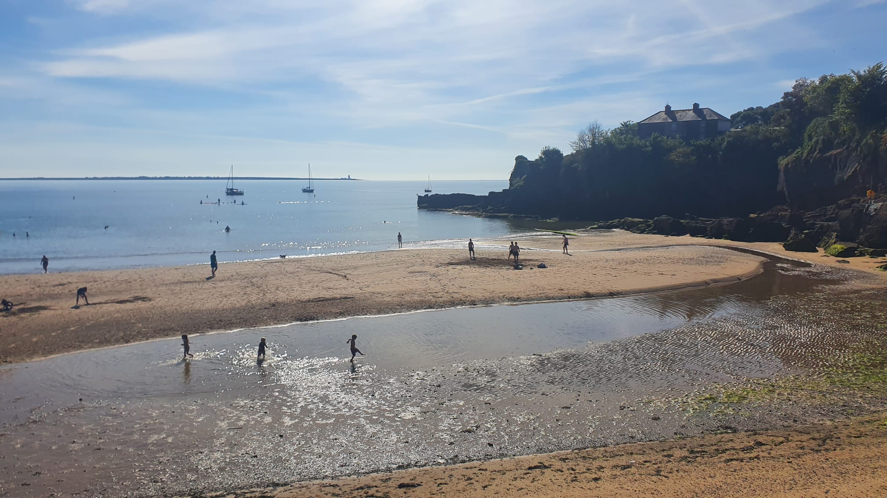
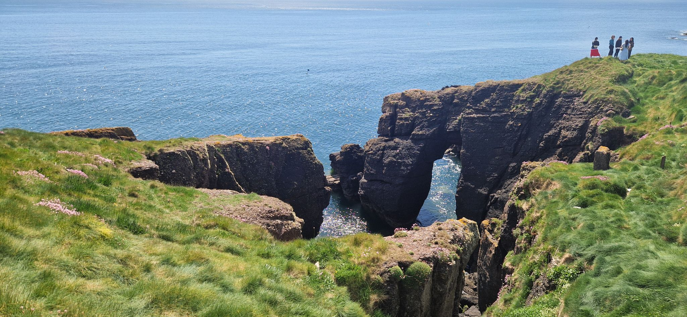
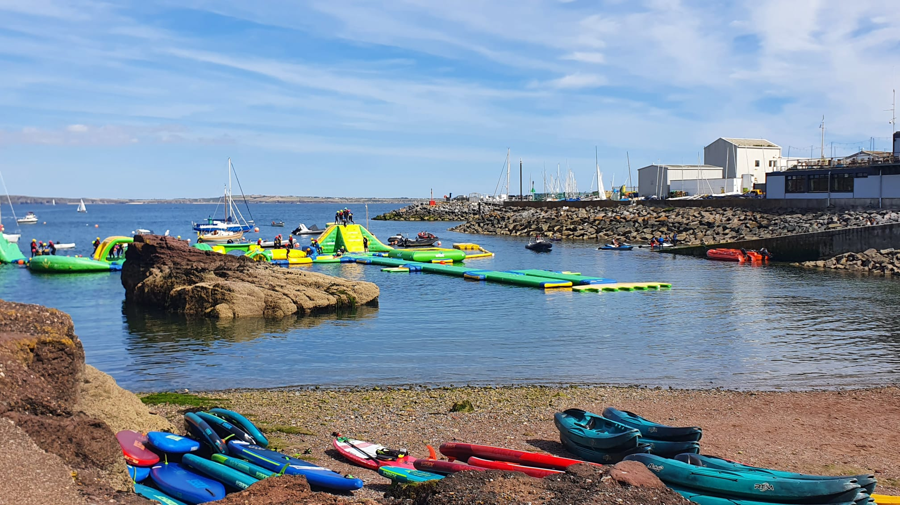

Sleep comfortably
Three bedrooms with one king bed and two queen beds. Two bathrooms, including one ensuite. Bed linen and towels provided.
A HOME ABOVE THE HARBOUR
An elegant coastal stay overlooking Dunmore East Harbour. Three bedrooms in a historic clifftop convent, with space for six and the village on your doorstep.
Check AvailabilityTake a look inside
HARBOUR DAYS, AT YOUR OWN PACE.THE APARTMENT
High ceilings, sash windows and period character meet the comforts of a fully equipped holiday home. Settle in with family or friends, cook together, or simply watch life on the water.

Three bedrooms with one king bed and two queen beds. Two bathrooms, including one ensuite. Bed linen and towels provided.
High-speed Wi-Fi, central heating, secure self check-in and free gated parking on site.
Oven, hob, microwave, refrigerator, dishwasher and Nespresso coffee machine.
Smart TV with streaming apps, Bluetooth speaker, board games and books.
LOOK AROUND
A closer look at Harbour House, inside and out.
Select a photograph to see it in full. Explore Dunmore East below.
PLAN YOUR COASTAL STAY
Choose your arrival, then your departure.
Your stay is confirmed personally.
Select arrival and departure to see the number of nights. A booked date may be used for departure only when none of your selected nights overlaps a booking.
Bookings are personally confirmed and managed locally. Selecting dates or making an enquiry does not reserve them.

DISCOVER DUNMORE EAST
Explore Dunmore East’s sandy beaches, seafood restaurants and hidden coves, then come home to your own space above the harbour.
Dunmore East, County Waterford, Ireland
Watch the boats, wander by the water and find your own favourite view of the village.

Make time for sandy shores, sea air and unhurried afternoons by the water.

Discover cliffside scenery and coastal walks, with a warm welcome waiting back at Harbour House.

A LITTLE ADVENTURE
A different way to enjoy the harbour: water activities and the Wibit inflatable aqua park at Dunmore Adventure.
Original photograph from our existing collection. Check the operator’s current sessions, age requirements and conditions before planning your visit.
Explore Dunmore AdventureLeave room for seafood, a leisurely lunch or an evening in a local pub. Ask for suggestions when planning your stay.
Pair time in the village with a day exploring County Waterford, then return to the quiet of your own coastal apartment.
PLAN YOUR STAY
Published guide rates, inclusive of VAT.
Request a quote for your dates.
Jan–Mar · Nov–mid-Dec
€950 / week
Quiet season, ideal for couplesApr · May · Oct
€1,150 / week
Mild weather, fewer crowdsJun · Sep
€1,400 / week
Warm seaside daysJul · Aug
€1,600 / week
5-night minimumChristmas & New Year
€1,500 / week
5-night minimumThese are indicative prices from the current website and do not constitute a fixed offer. Final rates may vary depending on the booking platform or agent. Availability and the total price must be confirmed for your dates.
Check Availability for your datesMAKE TIME FOR THE COAST
Choose your dates and tell us who’s coming. An enquiry is a request for availability and a quote; your stay is confirmed separately.
Bookings and local property management are handled by Dunmore Escapes.
Send an enquiry to the owner. Requested dates are subject to personal confirmation; submitting does not reserve them.